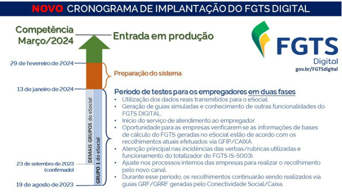

Texto alterado em 02/2025
Através da Resolução nº 926 de 2019 foi aprovado o sistema do FGTS Digital (Fundo de Garantia do Tempo de Serviço). Trata-se da reestruturação e substituição do sistema GRFGTS, que é a guia de recolhimento do FGTS, gerada pela CAIXA, com base nas informações prestadas pelo empregador via eSocial.
O FGTS Digital é "um conjunto de sistemas informatizados que se propõe a gerenciar os diversos processos relacionados ao cumprimento da obrigação de recolhimento do FGTS". Seu intuito é facilitar o cumprimento dessa obrigação pelos empregadores e assegurar que os valores devidos aos trabalhadores sejam efetivamente depositados em suas contas vinculadas.
Através do FGTS Digital os empregadores poderão, de forma simples e ágil:
A data de implantação do FGTS Digital está prevista para a competência MARÇO/2024!
| Data | Fase | Alcance |
|---|---|---|
| 19/08/2023 | Implantação do ambiente de produção e operação limitada. | Empresas do Grupo 01 (eSocial) |
| 23/09/2023 | Implantação do ambiente de produção e operação limitada. | Empresas dos demais grupos (eSocial) |
| 13/01/2024 | Encerramento da operação limitada. | Todas as empresas |
| 13/01/2024 a 29/02/2024 | Preparação do sistema para entrada em operação efetiva. | |
| 01/03/2024 | Implantação do ambiente de produção e operação efetiva. | Todas as empresas |
Os empregadores também terão a sua disposição o ambiente de testes, também chamado de PRODUÇÃO LIMITADA, que irá exibir exatamente as informações já enviadas pelo ambiente de produção do eSocial. Dessa forma, as empresas saberão exatamente como as informações com validade legal estão aparecendo no FGTS Digital. Poderão ser geradas guias simuladas, que não possuem validade jurídica e não possuem QRCode.
Será uma oportunidade para que os empregadores validem seus processos internos, conferindo se os dados declarados nas remunerações estão sendo refletidos corretamente no FGTS Digital. O eSocial calcula as bases de FGTS de acordo com as incidências das rubricas utilizadas pelo empregador nas remunerações dos trabalhadores. As rubricas, por sua vez, também são declaradas e cadastradas pelo empregador, que define se haverá ou não incidência de FGTS.
Se o empregador encontrar divergências nos valores devidos de FGTS entre seu sistema de gestão de folha e o FGTS Digital, deverá verificar inicialmente todas as rubricas declaradas, sejam elas de vencimento, desconto ou informativas. Deverá corrigir as incidências em cada rubrica e reenviar os eventos de remuneração para cada trabalhador, para que os totalizadores do FGTS sejam processados novamente.
A produção limitada ficará disponível para o empregador apenas até a entrada em produção efetiva/substituição da GFIP.
Cabe destacar que, durante a produção limitada, o empregador continuará recolhendo os valores de FGTS via SEFIP/Conectividade Social. A substituição ocorrerá apenas quando houver o término da produção limitada e o início da produção arrecadação.
Cadastramento de Procurações
Ainda no ambiente de PRODUÇÃO LIMITADA, os empregadores poderão antecipar o cadastramento de procurações para que terceiros possam acessar seus dados e representá-lo no FGTS Digital. Essas procurações já terão validade jurídica e serão utilizadas quando houver a substituição do recolhimento do FGTS pelo novo sistema. Trata-se de uma ótima oportunidade para as empresas organizarem seus processos internos de pagamento e deixar o sistema pronto para os operadores que serão constituídos.
Esse ambiente de testes será liberado em breve e deve ficar disponível de forma permanente, paralelo ao ambiente de produção real. Serão utilizados os dados fictícios transmitidos pelos empregadores no ambiente de produção restrita do eSocial. A empresa poderá transmitir as bases de dados para o eSocial via webservice ou pelo portal WEB login.producaorestrita.esocial.gov.br/login.aspx.
Assim como no ambiente de produção limitada, haverá a geração de guias simuladas, sem valor legal. Será uma ótima oportunidade para empresas realizarem testes utilizando cenários diversos, como simular quanto será a multa rescisória (indenização compensatória) do FGTS.
O endereço de acesso a esse ambiente será divulgado em breve.
Dica Legal
O Procurador (outorgado) conseguirá acessar os dados da empresa (outorgante) que delegou o acesso apenas com certificado digital. O acesso via senha do gov.br será permitido apenas para o usuário visualizar dados próprios ou como representante legal perante o cadastro do CNPJ na Receita Federal.
O FGTS Digital utilizará as informações declaradas pelos empregadores no eSocial para alimentar a base de dados.
O envio de admissões, alterações cadastrais e contratuais, desligamentos e, principalmente, as remunerações terão impacto quase simultâneo na gestão e geração de guias e outros serviços do sistema.
A cada evento transmitido do trabalhador, haverá a sensibilização no FGTS Digital. Não será necessário fechar a folha de pagamento (evento S-1299) para que o empregador possa gerar guias de determinada competência (mês). Em dias de grande volume de dados transmitidos, poderá haver um intervalo maior de tempo entre o envio e o processamento interno do FGTS Digital, e o empregador deve certificar-se de que todas as remunerações transmitidas já constam na tela. Para simplificar esse processo, principalmente para empresas com elevado número de trabalhadores, quando o empregador enviar o evento de fechamento da folha (S-1299), o FGTS Digital fará uma validação interna para verificar se todas as remunerações recebidas coincidem com o totalizador do FGTS (S-5013). Após essa verificação, o sistema indicará o status da folha (fechada ou aberta) e o horário em que foi realizada aquela validação.
A seguir, está o comparativo entre o processo anterior do Sistema Empresa de Recolhimento do FGTS e Informações à Previdência Social (SEFIP) e a nova forma de declaração de informações (eSocial):
| SEFIP | FGTS Digital |
|---|---|
| Para recolher o FGTS de apenas um trabalhador, a empresa tem que transmitir o de todos os outros, mesmo que já tenha efetuado o recolhimento destes. | Recebe dados por trabalhador, sem necessidade de reenviar declaração dos demais. |
| No caso de perda de arquivo transmitido e seu protocolo, só é possível gerar a guia pelo Conectividade Social. | Reimpressão de guias e relatórios on-line. |
| Exige guardar um backup com informações de meses anteriores caso seja necessário mandar alguma retificação ou recolhimento de diferenças. | Mantém repositório on-line, disponível para download. |
| Para regularizar situação de trabalhador com débitos em vários meses o empregador precisa enviar um SEFIP para cada mês e uma guia para cada competência. | Permite mandar todas as remunerações num único evento S-1200 apenas para o trabalhador nessa situação, sem necessidade de repetir os demais trabalhadores. Pode gerar uma única guia com todo o débito. |
| Parcelamento: exige envio de confissão de dívida para parcelar. A empresa precisa enviar novamente uma SEFIP para cada prestação, escolhendo os trabalhadores para bater com o total da guia. | Parcelamento: utiliza dados do eSocial. Não é necessário reenviar valores para individualizar as parcelas. |
| Não gera uma guia para cada tomador de serviços. | Filtro para gerar guia por tomador de serviços. |
| Há opção padrão para gerar guias do FGTS com todos os trabalhadores declarados na SEFIP. | Permite personalizar a guia de acordo com a necessidade da empresa, inclusive colocando em uma mesma guia várias competências diferentes, débitos mensais e rescisórios, por categoria de trabalhador, estabelecimento, por trabalhador, apenas débitos vencidos ou a vencer, entre outros. |
Além do eSocial, o FGTS Digital utilizará outras fontes de dados para recompor as bases de remunerações para recolhimento do FGTS. Informações declaradas anteriormente via SEFIP/GRRF, RAIS e valores apurados em fiscalização serão integrados ao banco de dados.
Dica Legal
Todos os débitos mensais e rescisórios de FGTS que tenham como referência o mês de março/2024 deverão utilizar o FGTS Digital como meio para recolhimento dos valores nas contas vinculadas dos trabalhadores. Débitos até a competência fevereiro/2024 continuarão a ser recolhidos via sistema da Caixa (SEFIP/GRRF/Conectividade Social).
Exemplos:
Nota
O suporte aos empregadores não é realizado pela Senior. As informações desta seção dizem respeito aos recursos e canais de suporte diretamente vinculados ao sistema FGTS Digital e seus respectivos responsáveis.
Os serviços de atendimento do FGTS Digital são realizados pelo MINISTÉRIO DO TRABALHO E EMPREGO e pela CAIXA ECONÔMICA FEDERAL por meio dos canais, confira.
Clique na imagem abaixo e confira nosso guia com os 8 passos para realizar a entrega do FGTS Digital, incluindo a explicação detalhada de cada uma das fases.